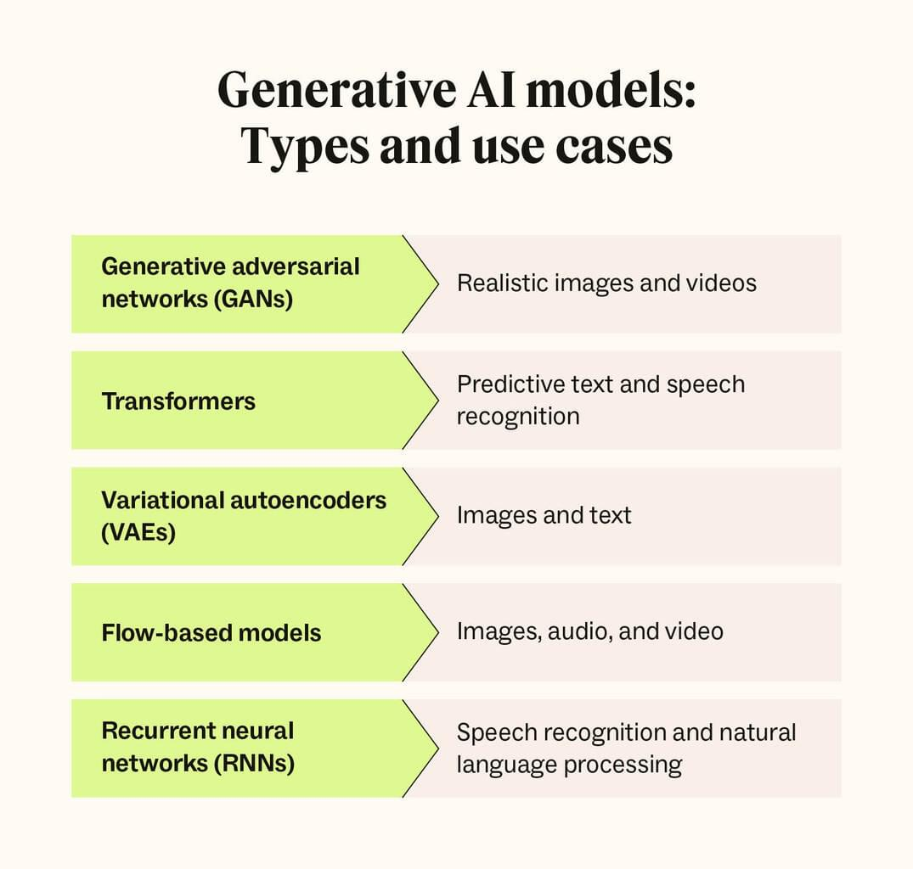
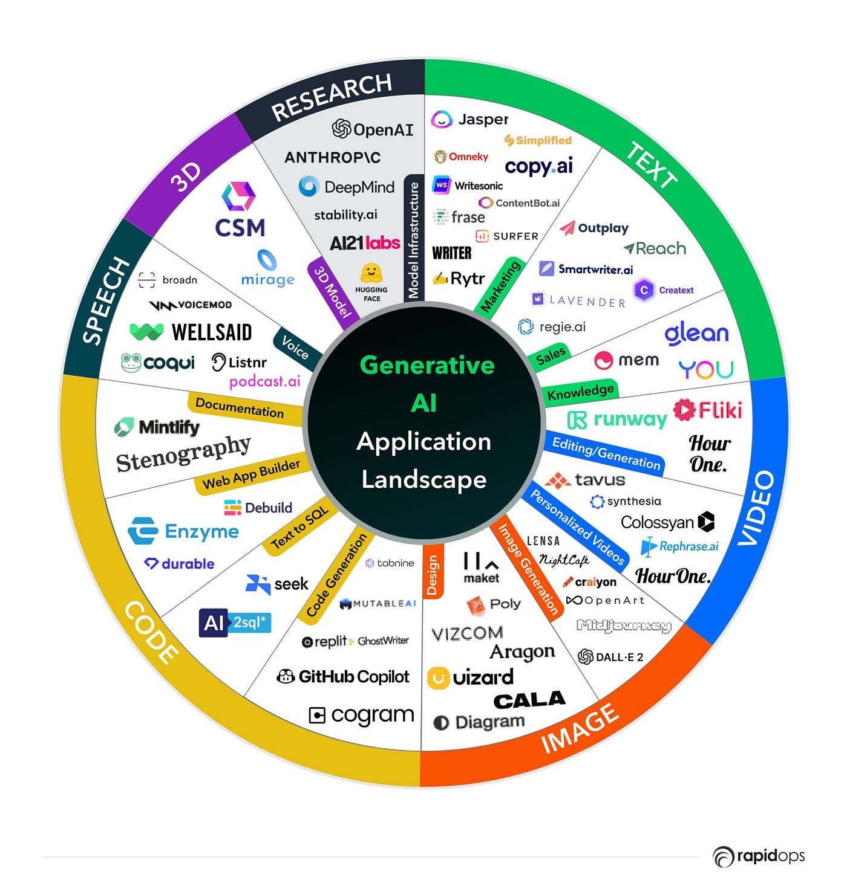
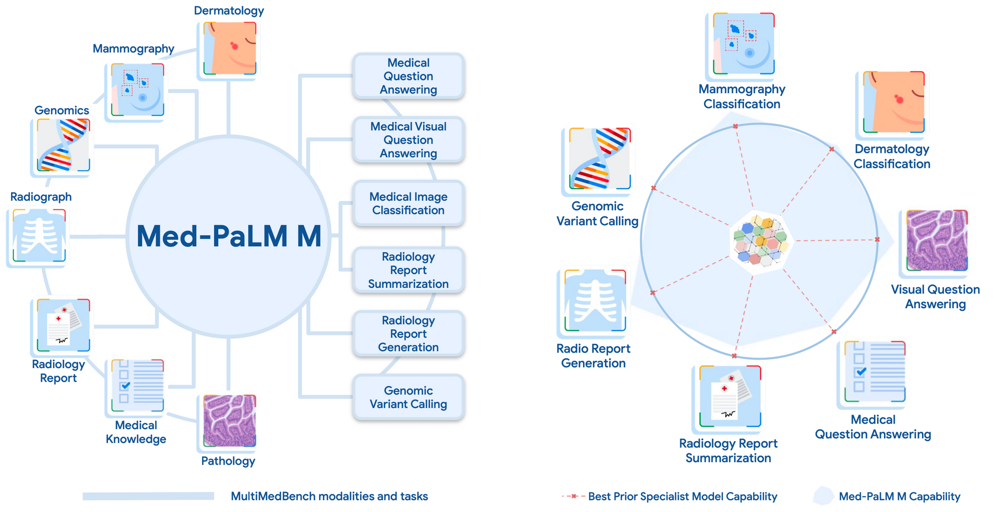
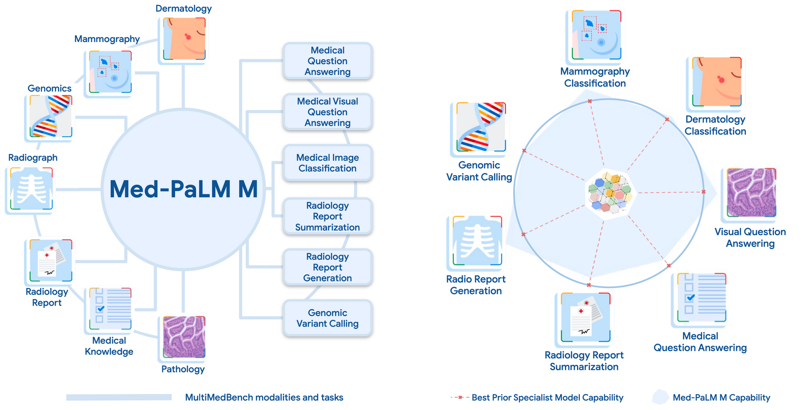

Le développement des IA générative et leurs applications dans les différents secteurs d'activités.


|
L'intelligence artificielle générative (IA générative) est une branche de l'intelligence artificielle (IA) qui se concentre sur le développement de modèles capables de générer des données nouvelles et originales. L'objectif principal est de créer des algorithmes qui peuvent produire des contenus tels que des images, du texte, de la musique, etc., qui semblent être créés par des humains. |
| Source: synoptek.com | |
L'approche de l'apprentissage superviséL'enseignement guidé est une méthode d'IA où un système est formé à partir de données d'entraînement étiquetées. Ces données sont composées d'exemples d'entrées et de leurs sorties correspondantes. L'IA a pour fonction d'apprendre à associer les entrées aux sorties correctes, et avec le temps, il est capable de prédire la sortie pour de nouvelles entrées. Cette méthode est couramment utilisée dans de nombreuses applications d'IA, comme la détection de spam, la reconnaissance de la parole et la prédiction du temps. |

|
| Source: kodkodkod.studio | |
L'approche de l'apprentissage non superviséL'apprentissage non supervisé est une autre méthode utilisée en IA. Ici, le système apprend tout seul en découvrant des schémas ou des motifs dans les données qui ne sont pas déjà marquées ou classées. C'est comme si on lui donnait un tas de pièces de puzzle sans l'image de référence, et il doit comprendre comment les pièces s'emboîtent ensemble. C'est différent de l'apprentissage supervisé où on lui donne des exemples précis pour assimiler les choses. |

|
| Source: kodkodkod.studio | |

|
L'approche de l'apprentissage par renforcementL'apprentissage par renforcement est une autre façon dont une IA peut apprendre. Imaginez que l'IA est comme un enfant qui joue à un jeu vidéo pour la première fois. Au début, l'enfant ne sait pas comment jouer et fait beaucoup d'erreurs. Mais à chaque fois qu'il fait quelque chose de bien, il gagne des points (c'est la récompense). Et à chaque fois qu'il fait une erreur, il perd des points ou le jeu devient plus difficile (c'est la punition).Au fur et à mesure qu'il joue, l'enfant apprend quels mouvements lui font gagner des points et quels mouvements rendent le jeu plus difficile. Il commence alors à faire plus de mouvements qui lui font gagner des points et à éviter ceux qui rendent le jeu plus difficile. C'est exactement ce que fait l'IA dans l'apprentissage par renforcement : elle apprend à prendre des décisions qui maximisent ses récompenses. |
| Source: kodkodkod.studio | |
| Ainsi, une fois que ces méthodes d'apprentissage machine ont acquis une compréhension approfondie des modèles et des relations au sein des données, elles peuvent être mises à contribution pour générer de nouvelles données. Ces nouvelles données sont créées en utilisant des techniques avancées telles que les Generative Adversarial Networks (GANs), qui exploitent intelligemment les connaissances accumulées pour produire des contenus originaux et pertinents. |
 |

|
L'approche Generative Adversarial Networks (GAN)Les GAN sont composés de deux réseaux neuronaux, un générateur et un discriminateur :• Générateur : Le générateur prend en entrée des données aléatoires (par exemple, du bruit) et génère des données synthétiques, telles que des images, des textes ou d'autres types de contenus. Son objectif est de créer des données qui ressemblent autant que possible à celles d'un ensemble de données réelles. • Discriminateur : Le discriminateur prend en entrée à la fois des données réelles provenant d'un ensemble de données d'entraînement réel et des données générées par le générateur. Son rôle est de distinguer entre les données réelles et les données générées par le générateur. Il cherche à améliorer sa capacité à faire cette distinction au fil de l'entraînement. |
| Source: zendesk.com | |
Génération de texteA partir d'un prompt (texte de départ), l'IA générative peut créer un texte correspondant.
 Génération d'une réponse avec ChatGPT |
Génération d'imageA partir d'une description textuelle, l'IA générative peut créer une image correspondante.  Génération d'une réponse avec DALL-E 2 |
Génération de musiqueA partir d'un prompt, de lyric en occurence, l'IA générative peut créer des musiques totalement unique et magique. |
Génération de vidéoA partir d'un prompt, l'IA générative peut créer des vidéos quasiment indifférentiable de celles réalisées par l'Homme. |
|
Autres exemples de services d'IA générative :  |
|
La santéDans le domaine de la santé, les outils d’IA générative peuvent être utilisés pour la découverte et le développement de médicaments, la prévision de l’évolution des maladies et l’analyse d’imagerie médicale. En analysant de grandes quantités de données médicales, l’IA générative peut identifier des médicaments candidats potentiels ou prédire la façon dont les patients réagissent à différents traitements. De plus, l’IA générative peut analyser des images médicales, telles que des radiographies et des IRM, pour aider les médecins à diagnostiquer plus précisément les maladies et affections.De plus, l’IA générative peut également être utilisée dans la recherche génétique pour voir comment l’expression des gènes change en réponse à des changements spécifiques dans les gènes. Cela pourrait accélérer le développement des thérapies géniques et améliorer le processus de traitement en prédisant à quelle thérapie les gènes des patients répondent le mieux. Exemple : Google travail sur "Med-PaLM", une IA générative qui se vise à devenir une source de conseils et d'informations pour les patients, remplaçant progressivement les recherches sur Google. Celle-ci est capable de répondre à des questions sur des images médicales, de conseils sur les médicaments ou encore de fournir des informations sur les maladies.  
Med-Palm analyse l'image et répond à la question de l'utilisateur |
L'éducationDans le secteur de l’éducation, l’IA générative peut être utilisée dans l’apprentissage adaptatif, la création de contenu éducatif et l’engagement des étudiants. En analysant les données sur les performances des élèves, l'IA générative peut aider les enseignants à créer des expériences d'apprentissage plus personnalisées, en adaptant le programme aux besoins de chaque élève. En outre, l’IA générative peut être utilisée pour créer du contenu éducatif, tel que des quiz et des jeux, qui engagent les élèves et renforcent l’apprentissage.L'IA générative peut aider les enseignants à gagner du temps, mais elle ne doit pas remplacer leur rôle essentiel. L'IA générative peut être utilisée pour automatiser certaines tâches, telles que la préparation des cours ou la correction des devoirs. Cela peut libérer du temps aux enseignants pour se concentrer sur d'autres aspects de leur travail, tels que la création d'activités pédagogiques engageantes et l'accompagnement personnalisé des élèves. |
La communicationQue ce soit pour les réseaux sociaux ou les chaines de télévision journalistique, la communication est un élément essentiel de notre vie quotidienne. L'IA générative peut être utilisée pour améliorer l'expérience de communication des utilisateurs en leur fournissant des contenus plus pertinents et personnalisés. Par exemple, les entreprises de médias peuvent utiliser l'IA générative pour créer des articles de presse personnalisés en fonction des préférences de leurs lecteurs. De même, les entreprises de médias sociaux peuvent utiliser l'IA générative pour créer des contenus personnalisés pour leurs utilisateurs, en fonction de leurs intérêts et de leurs préférences.Démonstration d'une émission journalistique présentée et structurée entièrement par Intelligence Artificielle (Individus, voix, texte artificiellement générés) L'IA générative peut également permettre de briser les barrières linguistiques en traduisant automatiquement les contenus dans la langue préférée des utilisateurs. Par exemple, un appel téléphonique peut être traduit en temps réel dans la langue préférée de l'utilisateur (notamment ce qu'à réaliser Samsung avec son système de traduction "AI Live Translate Call"). De même, les sous-titres des vidéos peuvent être traduits automatiquement dans la langue préférée de l'utilisateur. |
La fabricationL'IA générative peut être utilisée dans la conception de produits, l'optimisation des processus et la maintenance prédictive dans l'industrie manufacturière. En analysant les données sur les performances des produits, l’IA générative peut aider les fabricants à optimiser la conception des produits, à améliorer les fonctionnalités et à réduire les coûts. De plus, l’IA générative peut aider les fabricants à optimiser leurs processus de production, en minimisant les déchets et en améliorant l’efficacité. Enfin, l’IA générative peut être utilisée pour prédire les pannes d’équipements, permettant ainsi aux fabricants d’effectuer la maintenance avant qu’une panne ne survienne. |
Le divertissementDans le domaine du divertissement, l'IA générative peut être utilisée pour créer des contenus personnalisés et plsu immersifs pour les utilisateurs.Pour le secteur du cinéma, l'IA générative peut être utilisée pour créer des scénarios ou créer des effets spéciaux. Pour le secteur de la musique, l'IA générative peut être utilisée pour créer des chansons ou des effets sonores. Pour ce qui est des jeux vidéo, l'IA générative peut permettre les éléments suivants : • Créer des personnages non joueurs (PNJ) plus réalistes et plus intelligents. • Créer des environnements de jeu plus réalistes et plus immersifs. • Adapter le gameplay du jeu en fonction des préférences et des compétences des joueurs. • Génération de Contenu Procédural --> Longévité du jeu augmentée avec les variations d'une même jeu (chaque partie et différente) • Animation et graphisme autogénérés • Dialogue et intrigue améliorés et plus naturel Source: cio.com - Game on: The evolution of gaming through generative AI innovation - Jan 19, 2024 Inworld AI a le potentiel de révolutionner la manière dont les PNJ sont créés pour les jeux vidéo et les expériences immersives. Les PNJ Inworld AI sont plus intelligents, réalistes et engageants que les PNJ traditionnels, ce qui peut créer des expériences de jeu plus immersives et mémorables. |
La modeLes IA génératives peuvent aider les créateurs à concevoir des vêtements à la mode en utilisant les capacités de génération d'images des IA génératives ; l'outil peut utiliser d'énormes quantités de données sur le design de mode et suivre l'évolution des tendances pour analyser les besoins des clients et concevoir en conséquence des vêtements à la mode. De plus, les outils génératifs basés sur l'IA peuvent aider le créateur à générer des modèles de mode pour ses vêtements créatifs ; cela élimine la séance photo fastidieuse, longue et coûteuse, leur permettant ainsi d'avancer dans le lancement du produit. |
| Source: solulab.com |
Pour conclure, l'AI Générative à la capacité de révolution et de modifier entier notre façon de créer et d'innover. Nous l'avons vu, l'IA générative rayonne sur tout les secteurs d'activité. Que se soit du divertissement ou de la santé, les nouvelles possibilitées sont très grande augmentant notre efficacité dans s'est secteurs. Cependant, il faut garder un certain recule sur ces nouvelles capacités et favoriser le travail humain qui devra s'adapter à ces nouvelles technologies comme l'Homme l'a toujours fait.
Pour finir, voici une vidéo illustrant la dérivée de l'utilisation de l'IA générative dans le divertissement :